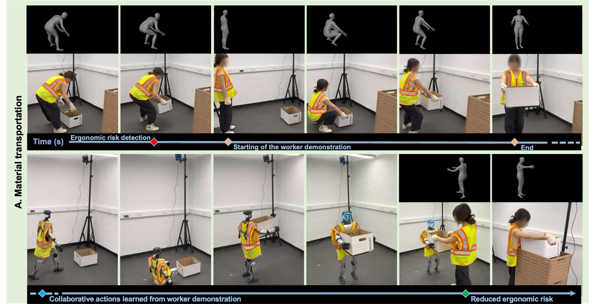
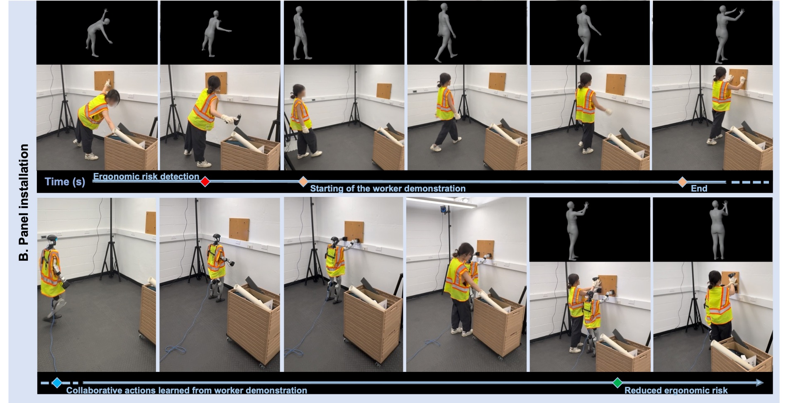

Humanoid robots hold the promise of becoming versatile physical collaborators that assist people across diverse tasks. In construction, this capability could address productivity and safety challenges by supporting workers during physically demanding operations. However, effective collaboration requires more than independent task execution: robots need to recognize when assistance is needed and coordinate their actions with human partners toward shared goals.
Here, we present a pose-aware human–humanoid collaboration method integrating human-state perception with collaborative skill learning and execution. A deep pose assessment network assesses workers' ergonomic risk under partial occlusion to identify assistance needs. A three-stage teacher–student–adaptation reinforcement learning framework acquires assistance skills from human demonstrations and adapts learned motions to collaborative requirements.
Results from material transportation and panel installation construction scenarios demonstrate that the system enables a humanoid robot to assess workers' ergonomic risks with 98.6% accuracy and execute collaborative assistance behaviors with an average mean per-joint position error of 86.9 mm. Humanoid assistance reduces workers' Rapid Entire Body Assessment (REBA) scores by 48.3%. This method contributes to the development of adaptive humanoid collaborators for more efficient construction work.
98.6%
Ergonomic risk assessment accuracy
under partial occlusion
86.9 mm
Mean per-joint position error
of executed assistance motions
−48.3%
Reduction in workers'
REBA score
The system integrates two main components: BRACE-Net, a deep neural network for robust 3D human body reconstruction and construction ergonomics risk assessment (A in the figure above), and an ergonomics-driven humanoid collaborative action learning mechanism (B) that enables humanoids to acquire collaborative construction skills from worker demonstrations and assist during ergonomically demanding tasks.
When a sustained high-risk posture is detected, the collaborative action learning mechanism is activated to acquire a robot-assistance strategy for reducing the worker's ergonomic demands. During subsequent task execution, BRACE-Net continuously monitors the worker, and the learned policy generates assistance actions when similar high-risk conditions recur — reducing ergonomic risk while maintaining task continuity.

Ergonomic risk detection triggers the worker demonstration (top); the humanoid then executes the collaborative actions learned from it, reducing the worker's ergonomic risk (bottom).

The humanoid holds the panel against the wall so the worker can fasten it without sustaining an overhead, bent-trunk posture.
@article{liu2026poseaware,
author = {Liu, Yanxi and Jebelli, Houtan and Liu, Yizhi},
title = {Pose-aware Human-Humanoid Collaboration in Construction},
year = {2026},
}